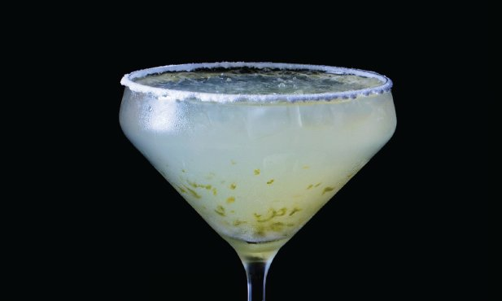

Acesse a receita original
INGREDIENTES
- 2 dl sumo de lima + 2
- 2 dl sumo de limão
- 50 g açúcar
- 8 c. chá sal
- 6 dl tequila
- 6 dl triple sec
- qb gelo picado
PREPARAÇÃO
- Misture num shaker o sumo de lima e o de limão, o açúcar e a raspa de uma lima. Agite bem e deixe repousar durante 30 minutos.
- Coloque o sal numa tábua e forme com ele uma camada grossa.
- Molhe o rebordo dos copos e rode-os sobre o sal de forma a ficarem com sal agarrado a toda a volta.
- Adicione a tequila e o triple sec e misture novamente.
- Acrescente o gelo picado e misture.
- Deite nos copos e sirva com rodelas da restante lima.